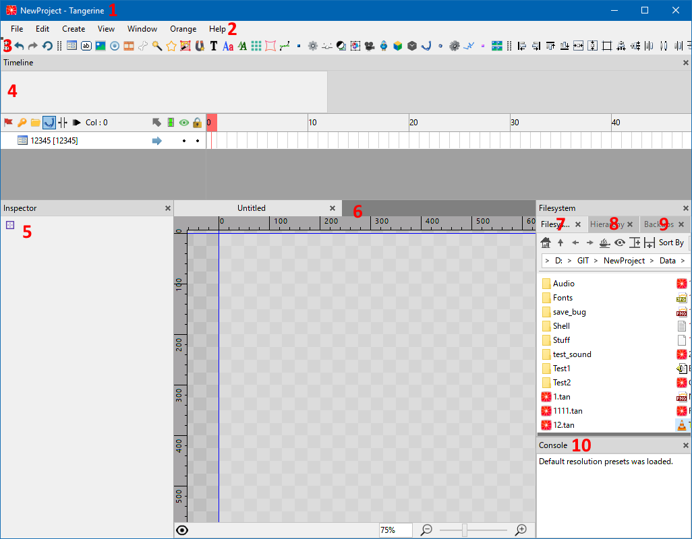

Пользовательский интерфейс (UI)
[EN | RU]
Главное окно Tangerine

- Заголовок окна - показывает имя открытого проекта и название редактора.
- Панель меню - служит для отображения меню редактора.
- Панель инструментов - служит для отображения доступных инструментов редактора.
- Окно "Timeline" - служит для отображения временной шкалы с кадрами и ключами анимации.
- Окно "Inspector" - служит для отображения свойств выбранного объекта (ноды/виджета), с возможностью редактирования этих свойств.
- Окно "Viewport" - служит для отображения текущей сцены. Всегда должно иметь как минимум 1 вкладку для отображения. Снизу находится статусбар, который, пока что, содержит в себе только ползунок с зумом.
- Окно "Filesystem" - файлменеджер для текущего проекта (и не только). Используется для навигации по файлам.
- Окно "Hierarchy" - дерево и поиск объектов на сцене
- Окно "Backups" - управление бекапами сцены
- Окно "Console" - используется для отображения различной технической информации и вывода ошибок.
- Окно "Model3D Attachment" - используется для настройки 3d-моделей. (по-умолчанию скрыто, вызывается через View -> Panels -> Model3D Attachment. Имеет смысл при работе с Model3D)